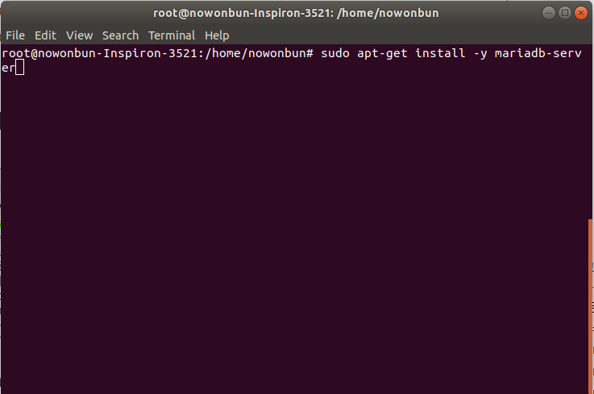
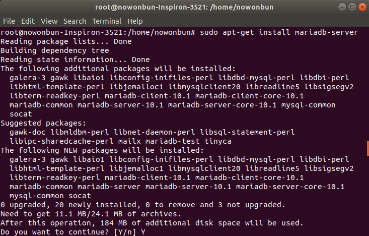
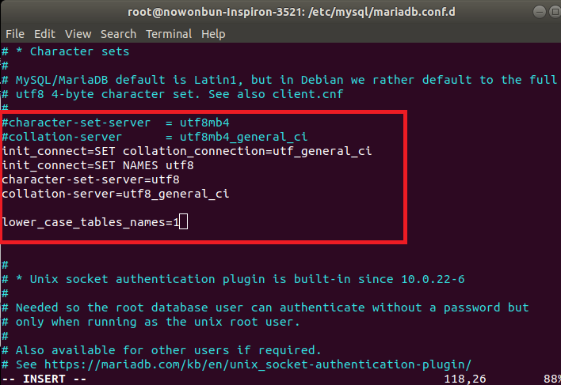
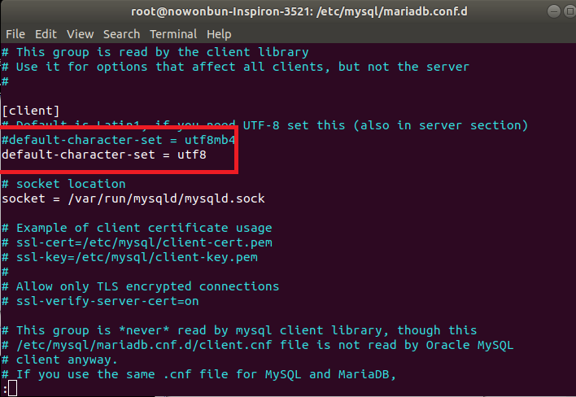
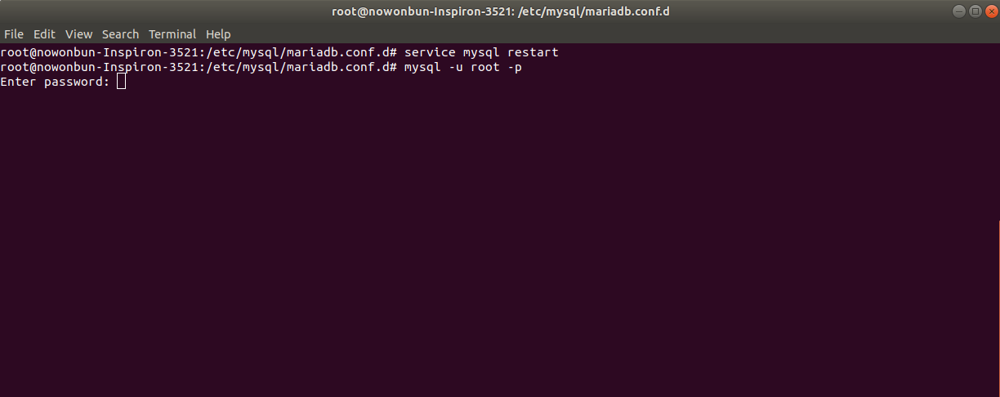
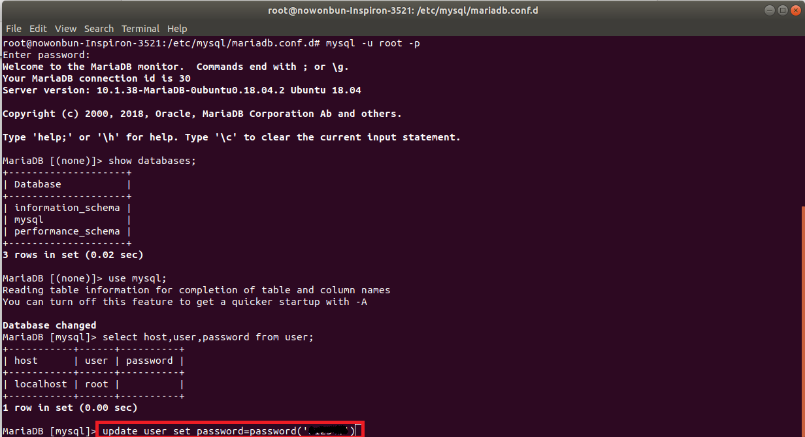
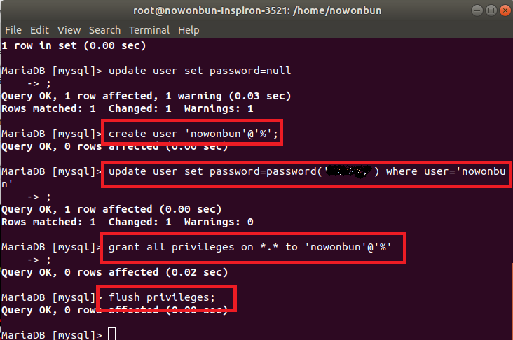
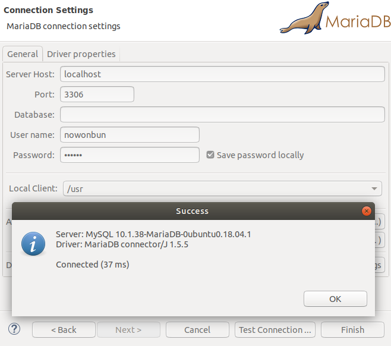

[Ubuntu] MariaDB(Mysql)をインストールする方法
こんにちは。明月です。
MariaDBに関しては以前CentOSでインストールする方法で説明したことがあります。
link - [CentOS] MariaDB(Mysql)をインストール
ubuntuもCentOSでインストールすることと似てますね。
ただ、yumではなく、apt-getを利用してインストールすることだけです。
先、ターミナルで接続して(Ctrl + Alt + T)apt-getでmariaDBをインストールしましょう。
sudo apt-get install -y mariadb-server


これでインストールは完了しました。環境設定しましょう。
「/etc/mysql/mariadb.conf.d/」に移動して「50-server.cnf」を下記の設定で追加します。
init_connect=SET collation_connection = utf8_general_ci
init_connect=SET NAMES utf8
character-set-server=utf8
collation-server=utf8_general_ci
lower_case_table_names = 1

次は「50-client.cnf」で下記の設定を追加します。
default-character-set=utf8

そしてmariaDBを再起動しましょう。
service mysql restart
そして「mysql -u root -p」で接続します。初めはパスワードが設定されてないのでそのままenterキーで接続できます。

初めは「root」のパスワードを変更しましょう。
#データベース確認
show databases;
#mysql データベース選択
use mysql
select host, user, password from user;
update user set password=password('パスワード');

「root」設定を完了しましたので、ユーザを追加しましょう。
create user '生成するID'@'%';
update user set password=password('***') where user='生成するID';
grant all privileges on *.* to '生成するID'@'%';
flush privileges;

設定を完了しました。これからsqlブラウザで接続を確認しましょう。

「Devlopment note / Linux」の他投稿
- [Ubuntu] PHPをインストール、Composer設定する方法2019/11/13 07:32:21
- [Ubuntu] テーマ(Arc)を変更する方法(tweak)2019/11/12 07:32:13
- [Ubuntu] Apache2をインストールする方法2019/11/11 07:28:28
- [Ubuntu] 「acquire the dpkg frontend lock」のエラーを解決方法2019/11/10 22:19:34
- [Ubuntu] JavaインストールとEclipseをインストールする方法2019/11/08 07:29:55
- [Ubuntu] MariaDB(Mysql)をインストールする方法2019/11/07 07:50:58
- [Ubuntu] Chromeをインストールする方法2019/11/06 19:48:19
- [CentOS] YUMについて、YUMが出来ない場合処理方法2019/11/05 07:17:58
- [CentOS] MariaDB(Mysql)をインストール2019/11/04 18:35:10
- [CentOS] FTPインストールする方法(vsftpd)2019/11/01 07:29:57
- [CentOS] SAMBAインストール方法2019/10/30 07:38:57
- [CentOS] PHPインストールする方法2019/10/29 20:09:03
- [CentOS] ApacheとTomcatの連携2019/10/29 07:28:33
- [CentOS] Tomcat インストール方法2019/10/28 22:38:56
- [CentOS] Java インストール2019/10/28 00:22:32
最新投稿
- [Python] 20. stringフォマード(Formatting)と補間法(interpolation)2020/06/23 19:03:21
- [Python] 19. 非同期IOのasync/await(asyncio)を使う方法2020/06/22 18:10:12
- [Python] 18. ネットワーク(Socket)通信する方法2020/06/18 19:53:56
- [Python] 17. スレッド(Thread)とロック(lock)、そしてデッドロック(deadlock)2020/06/18 00:19:45
- [Python] 16. IO(ファイル読み取り、書き込み)を扱う方法2020/06/16 18:37:00
- [Python] 15. クラスを継承する方法2020/06/15 18:20:07
- [Python] 14. クラスプロパティ(Property)2020/06/12 17:45:13
- [Python] 13. クラス関数(class method)とダック・タイピング、そして特殊メソッド2020/06/11 19:42:29
- [Python] 12. クラス(Class)を使う方法2020/06/10 19:33:33
- [Python] 11. デコレーター（Decorator）を使う方法2020/06/09 17:27:18
- [Python] 10. モジュールとパッケージ(import)2020/06/08 19:07:50
- [Python] 09. 例外処理する方法2020/06/05 17:11:47
- [Python] 08. ジェネレータ(Generator)2020/06/04 18:46:08
- [Python] 07. globalとnonlocal2020/06/03 20:34:49
- [Python] 06. 関数(function) - インライン関数、callbak、ラムダ(lambda)そしてクロージャ2020/06/02 20:51:22